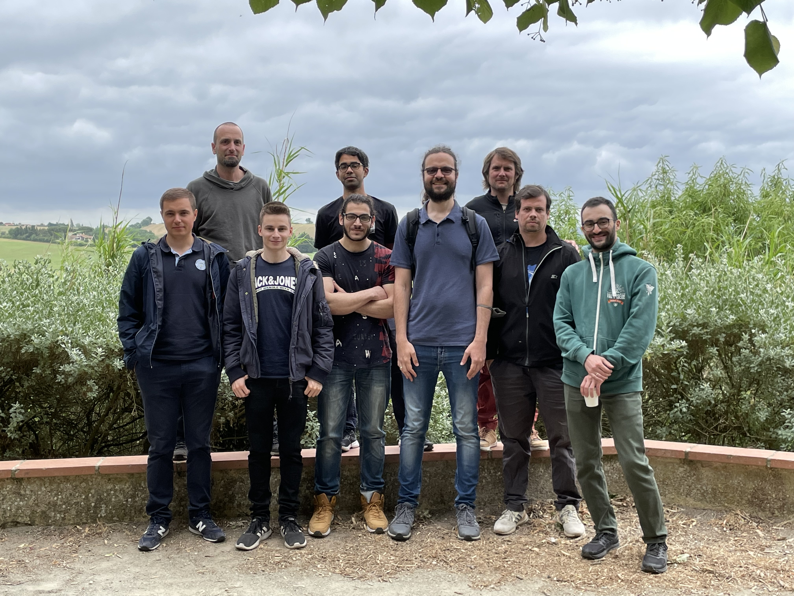

Extended (PTEROSOR + T-REX) group picture
 From left to right: Enzo Monino, Anthony Scemama, Yann Damour, Abdallah Ammar, Vijay Gopal Chilkuri, Fabris Kossoski, Pierre-Francois Loos, Raul Quintero-Monsebaiz, and Evgeny Posenitskiy.Recent News
- Feb 2025: Antoine’s paper on anomalous propagators and the particle-particle channel: Bethe-Salpeter equation has been accepted to JCP for publication.
- Jan 2025: Abdallah Ammar has left the group to start a permanent position as CNRS research engineer at the LPCT in Nancy.
- Dec 2024: Yann Damour has joined the group of Sandeep Sharma in Caltech as a postdoctoral fellow.
- Oct 2024: Yann Damour has succesfully defended his PhD entitled “Highly Accurate Computational Strategies for Molecular Electronic States”. Congrats Dr Damour!
- Aug 2024: Antoine’s paper on anomalous propagators and the particle-particle channel: Hedin’s equations has been accepted to PRB for publication.
- Jul 2024: Fabris Kossoski secured a permanent CNRS position. Congrats Fabris!
- Jun 2024: Yann’s paper on selected configuration interaction for resonances has been accepted to JPCL for publication.
- Apr 2024: Abdallah Ammar joins the group as a postdoc. Welcome Abdallah!
- Mar 2024: Antoine’s paper on reference energies for valence ionizations and satellite transitions has been accepted for publication in JCTC.
- Mar 2024: Yann’s paper on state-specific coupled-cluster methods for excited states has been accepted for publication in JCTC.
- Jan 2024: Enzo Monino has joined the group of Libor Veis as a postdoctoral fellow.
- Dec 2023: Fabris’ paper on seniority and hierarchy configuration interaction for radicals and excited states has been accepted for publication in JCTC.
- Oct 2023: Enzo Monino has successfully defended his PhD dissertation entitled “Green’s function methods for charged and neutral excitations”.
- Sep 2023: Enzo and Antoine’s paper describing QCMATH is available on arXiv.
- Jun 2023: Enzo’s paper on the the connections and performances of Green’s function methods for charged and neutral excitations has been accepted for publication in JCP.
- Jun 2023: Raul’s paper on the the automatic generation of the EOM-CC equations has been accepted for publication in AIP Advances.
- May 2023: Antoine’s paper on the application of the similarity renormalization group approach to Green’s function methods has been accepted for publication in JCTC.
- Apr 2023: Sara’s paper on the exact excited-state functionals of the asymmetric Hubbard dimer has been accepted for publication in JPCL.
- Apr 2023: The PTEROSOR mid-term workshop on excited-state methods in electronic structure was held in Toulouse in early April and gathered 50 researchers from many different countries!
- Mar 2023: Fabris’ paper on state-specific CI methods for excited states has been accepted for publication in JCTC.
- Mar 2023: The PTEROSOR group is going on a three-day coding retreat.
- Feb 2023: Sara Giarrusso joins the group as a postdoc. Welcome Sara!
- Nov 2022: Yann’s paper on ground- and excited-state dipole moments has been accepted for publication to JCTC.
- Oct 2022: Yann and Enzo are presenting their work at the JTMS 2022.
- Oct 2022: Raul, Enzo, and Antoine’s paper on the connections between coupled-cluster and many-body perturbation theory has been accepted for publication in JCP.
- Oct 2022: Antoine Marie (re)joins the group as a PhD student. Welcome back Antoine!
- Sep 2022: The PTEROSOR team is organizing a workshop on emerging electronic structure methods for excited states in April 2023. More info here.
- Jul 2022: Enzo’s paper on the excited states and the automerization barrier of cyclobutadiene has been accepted for publication to JPCA!
- Jul 2022: Enzo, Raul, and Fabris present posters at the 12th triennial congress of WATOC in Vancouver!
- Jun 2022: Yann, Enzo, Raul, and Fabris participate in the 2022 RCTF congress in Bordeaux!
- Jun 2022: Yann, Enzo, and Raul participate in the Math mini-school in Paris!
- May 2022: Fabris is one of the invited speakers for the 2022 Young Researchers’ Meeting in Marseille!
- May 2022: Enzo’s paper on unphysical discontinuities, intruder states and regularization in GW methods has been accepted for publication to JCP!
- Apr 2022: Fabris’ paper on hierarchy CI has been accepted for publication in JPCL!
- Oct 2021: Yann Damour (re)joins the group as a PhD student. Welcome back Yann!
- Aug 2021: Antoine’s paper on variational pair CCD for ground and excited states has been accepted in JCP!
- Jun 2021: Fabris’ paper on pair CCD for excited states has been accepted in JCTC!
- Jun 2021: Raul Quintero-Monsebaiz joins the group as a postdoctoral fellow. Welcome Raul!
- Mar 2021: Enzo’s first paper on spin-flip BSE has been accepted in JCTC!
- Feb 2021: Our paper on perturbation theory in the complex plane has been accpeted in JPCM!
- Dec 2020: The QUEST website is officially online and the corresponding publication submitted!
- Oct 2020: Fabris Kossoski joins the group as a postdoctoral fellow. Welcome Fabris!
- Oct 2020: A new PhD student (Enzo Monino) joins the group. Welcome Enzo!
- Jun 2020: The ERC PTEROSOR project has officially started!
The PTEROSOR project
Processes related to electronically excited states are central in chemistry, physics, and biology, playing a key role in ubiquitous processes such as photochemistry, catalysis, and solar cell technology. However, defining an effective method that reliably provides accurate excited-state energies remains a major challenge in theoretical chemistry. In PTEROSOR, we aim to develop a totally novel approach to obtain excited-state energies and wave functions in molecular systems thanks to the properties of non-Hermitian Hamiltonians. Our key idea is to perform an analytic continuation of conventional computational chemistry methods. Indeed, through the complex plane, ground and excited states can be naturally connected. In a non-Hermitian complex picture, the energy levels are sheets of a more complicated topological manifold called Riemann surface and they are a smooth and continuous analytic continuation of one another. PTEROSOR’s main goal is to develop a new theoretical approach allowing connection, through the complex plane, electronic states. Instead of Hermitian Hamiltonians, we propose to use a more general class of Hamiltonians which have the property of being PT-symmetric, i.e., invariant with respect to combined parity reflection P and time reversal T. This weaker condition ensures a real energy spectrum in unbroken PT-symmetric regions. PT-symmetric Hamiltonians can be seen as an analytic continuation of conventional Hermitian Hamiltonians. Using PT-symmetric quantum theory, a Hermitian Hamiltonian can be analytically continued into the complex plane, becoming non-Hermitian in the process and exposing the fundamental topology of eigenstates. Our gateway between ground and excited states is provided by exceptional points that lie at the boundary between broken and unbroken PT-symmetric regions.
This project has received funding from the European Research Council (ERC) under the European Union’s Horizon 2020 research and innovation programme (Grant agreement No. 863481).